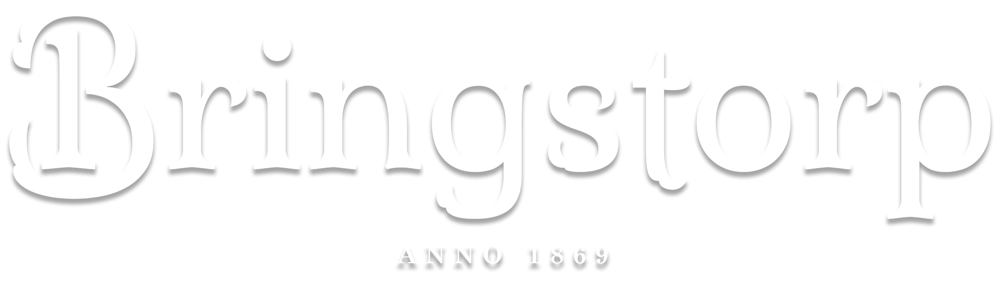
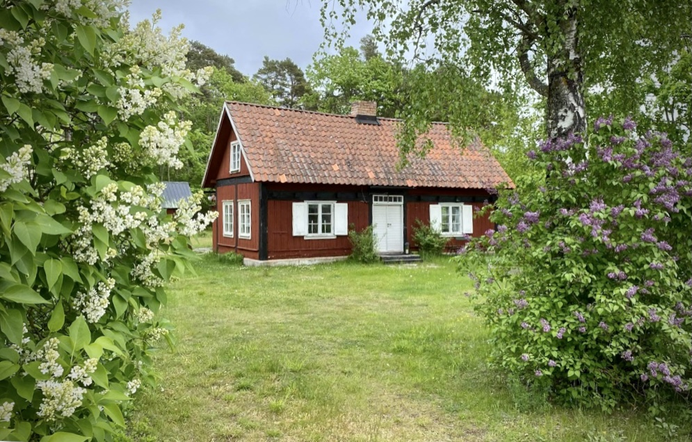
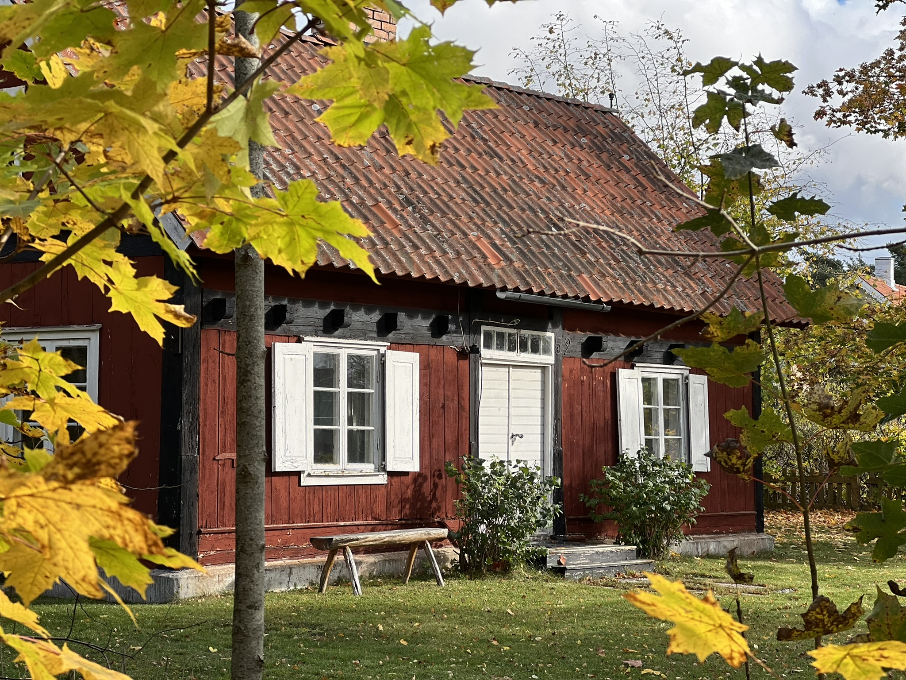

Gårdarna
Bringsarve är ett av flera traditionella gårdsnamn i Eskelhem och förekommer även i äldre tryckta källor.


Eskelhem · Gotland
Bringstorp är vårt namn på platsen vid Bringsarve i Eskelhem. Här samlar vi berättelser om huset, människorna, bygden och arbetet med att ta hand om ett gammalt gotländskt torp.
Börja i historienEtt digitalt gårdsarkiv
Fastigheten heter i dag Eskelhem Bringsarve 1:51. Namnet Bringsarve är betydligt äldre än den moderna fastighetsbeteckningen och finns belagt som gårdsnamn i Eskelhem åtminstone på 1800-talet.
Historien
Bringsarve nämns som gårdsnamn i Eskelhem i Gotlands land och folk från 1871. I hembygdsföreningens material finns dessutom en bild särskilt registrerad som ”Bringsarve 1-51”.
En personpost från Eskelhem visar också Ida Charlotta Närsten, född 1871, som dotter på ”Bringsarfe grund (1:51)”. Det är ett spännande tidigt spår som vi vill följa vidare i kyrkböcker, kartor och fastighetshandlingar.
Historiken byggs successivt ut. Där uppgifter ännu inte är säkert belagda markerar vi det tydligt.

Huset
Det röda huset, den vita tillbyggnaden, tegeltaket, skorstenen och de små ekonomibyggnaderna berättar tillsammans om hur platsen förändrats. Här kommer vi att dokumentera byggnadsdelar, material och förändringar vi upptäcker under renoveringen.
Eskelhem
Eskelhem är en gammal socken med medeltida rötter. Landskapet bär spår av äldre gårdar, ängsbruk och järnåldersmiljöer. Den medeltida kyrkan och det äldre vägnätet är fortfarande tydliga hållpunkter i bygden.
Bringsarve är ett av flera traditionella gårdsnamn i Eskelhem och förekommer även i äldre tryckta källor.
Hembygdsmaterialet beskriver hur gårdar, äldre brukningsvägar och ängsmarker bildar ett historiskt landskap runt kyrkbyn.
I socknen finns bland annat järnåldersmiljöer och det stora röset Ullviar rojr, skyddat som fornlämning.
Renovering
Bringstorp är inget museum. Huset ska användas, men förändringar ska göras med respekt för karaktären och det som går att bevara.
Här kommer vi att följa takrenoveringen, arbetet med den vita tillbyggnaden, orangeriet och andra projekt. Före- och efterbilder, materialval och sådant vi lär oss på vägen får ta plats.
Arkivet
Sajten ska också fungera som ingång till materialet bakom berättelsen. Vi fyller på när fler säkra uppgifter hittas.